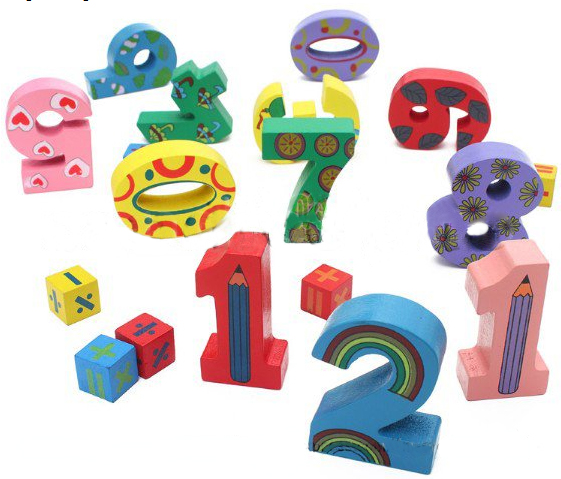

Other e-learning websites to check out
 Have you finished all your courses? Take a look at these websites to earn more diplomas, and keep up your learning!
E-learning for kids
 The complete Mathworld Curriculum consists of 336 e-lessons in English based on the International baccalaureate standards and 25 Math e-lessons on specific topics.
The complete Mathworld Curriculum consists of 336 e-lessons in English based on the International baccalaureate standards and 25 Math e-lessons on specific topics.
Math Learning Games
Mastering math facts is important for students as they learn more arithmetic. For instance, a math student who hesitates on math facts will not be able to perform triple-digit math additions or subtraction effectively. Instantaneous recall of math facts are also a requirement for long multiplication and division. These free math facts games should give your students a fun way to practice their math facts. These online math facts activities should be more fun, effective, and "green" than printed math fact worksheets.
Education City
 EducationCity is transforming teaching and learning, helping to improve childrens education. They provide fun educational games in the form of online activities for children and interactive whiteboard resources for teachers
EducationCity is transforming teaching and learning, helping to improve childrens education. They provide fun educational games in the form of online activities for children and interactive whiteboard resources for teachers
MathZone
 EducationCity is transforming teaching and learning, helping to improve childrens education. They provide fun educational games in the form of online activities for children and interactive whiteboard resources for teachers
EducationCity is transforming teaching and learning, helping to improve childrens education. They provide fun educational games in the form of online activities for children and interactive whiteboard resources for teachers